Ship and captain
Default ship and captain
Vesper · Noa Kurose
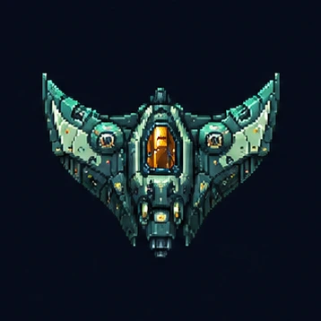
Vesper · ship illustration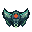
Vesper · in-game sprite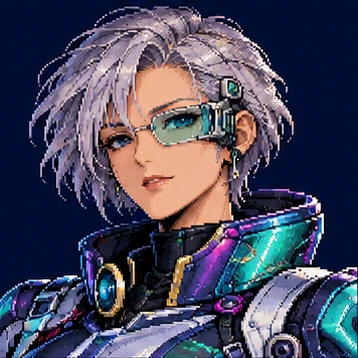
Noa Kurose · captain portraitNoa Kurose · in-game portraitStages
Prismatic Veil
Boss · Prism Regent
 Prismatic Veil · gameplay
Prismatic Veil · gameplayStage backgrounds
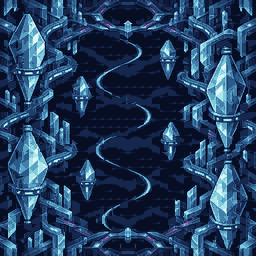
Full in-game stage map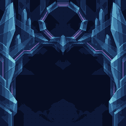
Full in-game boss arena mapAshen Foundry
Boss · Cinder Tyrant
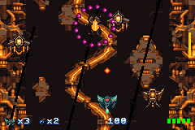
Ashen Foundry · gameplayStage backgrounds
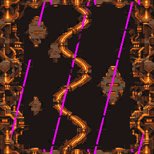
Full in-game stage map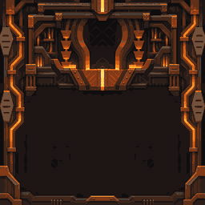
Full in-game boss arena mapPelagic Abyss
Boss · Abyssal Matriarch
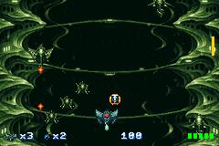
Pelagic Abyss · gameplayStage backgrounds
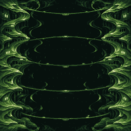
Full in-game stage map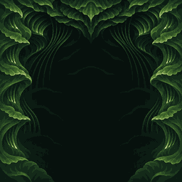
Full in-game boss arena mapNull Archive
Boss · The Null Archon
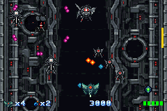
Null Archive · gameplayStage backgrounds
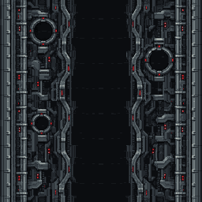
Full in-game stage map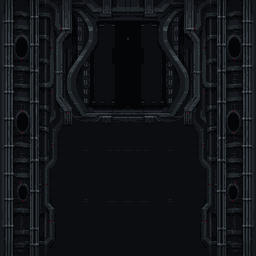
Full in-game boss arena mapZenith Throne
Boss · Throne Prime
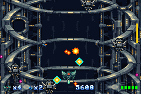
Zenith Throne · gameplayStage backgrounds
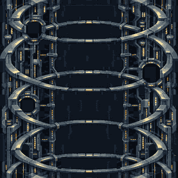
Full in-game stage map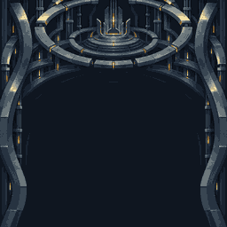
Full in-game boss arena mapEnemies
Veil Skater
Prismatic Veil
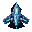
In-game sprite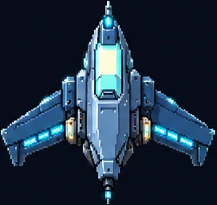
High-resolution illustrationLattice Weaver
Prismatic Veil
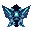
In-game sprite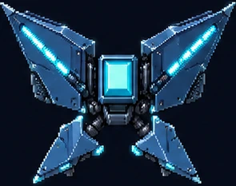
High-resolution illustrationPrism Lancer
Prismatic Veil
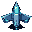
In-game sprite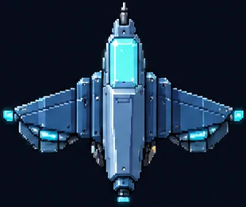
High-resolution illustrationIn-game sprite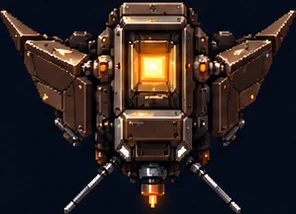
High-resolution illustration Grate Skimmer
Ashen Foundry
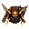
In-game sprite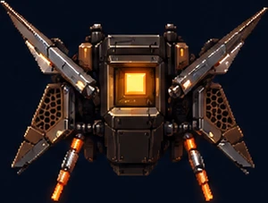
High-resolution illustrationCrucible Warden
Ashen Foundry
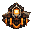
In-game sprite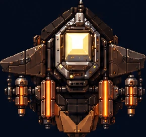
High-resolution illustration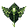
In-game sprite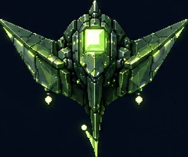
High-resolution illustration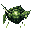
In-game sprite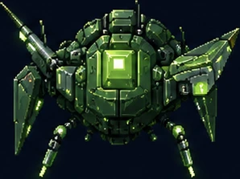
High-resolution illustration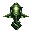
In-game sprite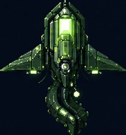
High-resolution illustration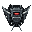
In-game sprite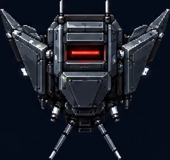
High-resolution illustrationArchive Warden
Null Archive
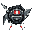
In-game sprite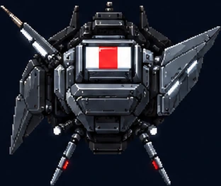
High-resolution illustrationErasure Lancer
Null Archive
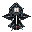
In-game sprite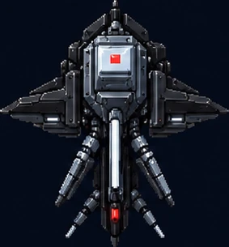
High-resolution illustrationCrown Sentinel
Zenith Throne
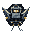
In-game sprite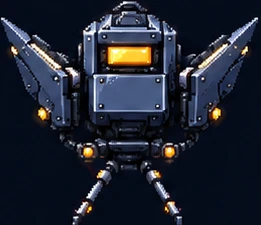
High-resolution illustrationAphelion Interceptor
Zenith Throne
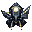
In-game sprite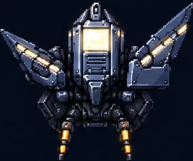
High-resolution illustrationSingularity Lancer
Zenith Throne
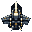
In-game sprite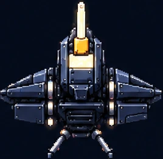
High-resolution illustrationHazards
Aurora Lens
Prismatic Veil
In-game spriteHigh-resolution illustration
Smelter Node
Ashen Foundry
In-game spriteHigh-resolution illustration
In-game spriteHigh-resolution illustration
In-game spriteHigh-resolution illustration
Star Crown Array
Zenith Throne
In-game spriteHigh-resolution illustration
Bosses
Prism Regent
Prismatic Veil
In-game spriteHigh-resolution illustration
Cinder Tyrant
Ashen Foundry
In-game spriteHigh-resolution illustration
Abyssal Matriarch
Pelagic Abyss
In-game spriteHigh-resolution illustration
The Null Archon
Null Archive
In-game spriteHigh-resolution illustration
Throne Prime
Zenith Throne
In-game spriteHigh-resolution illustration
Music
 Parallax Engine · Music Gallery player
Parallax Engine · Music Gallery playerCompact browser render from the game’s music data; the GBA mix may sound slightly different.